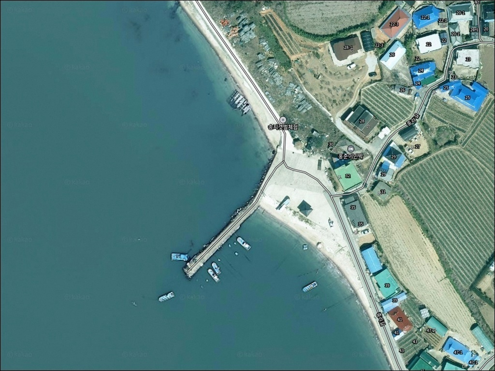
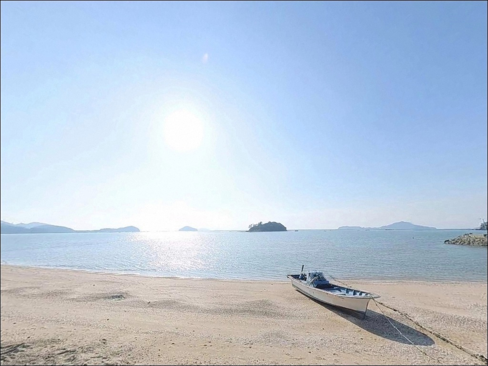
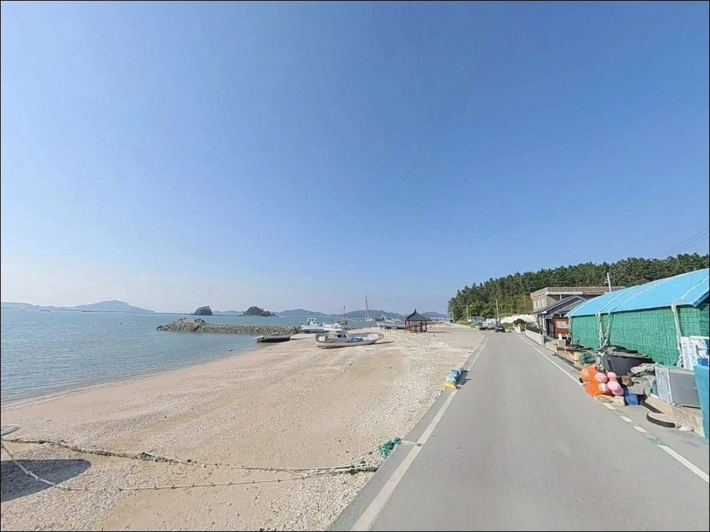
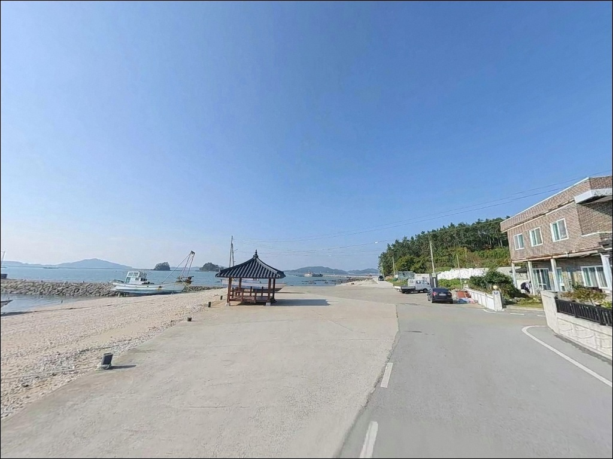
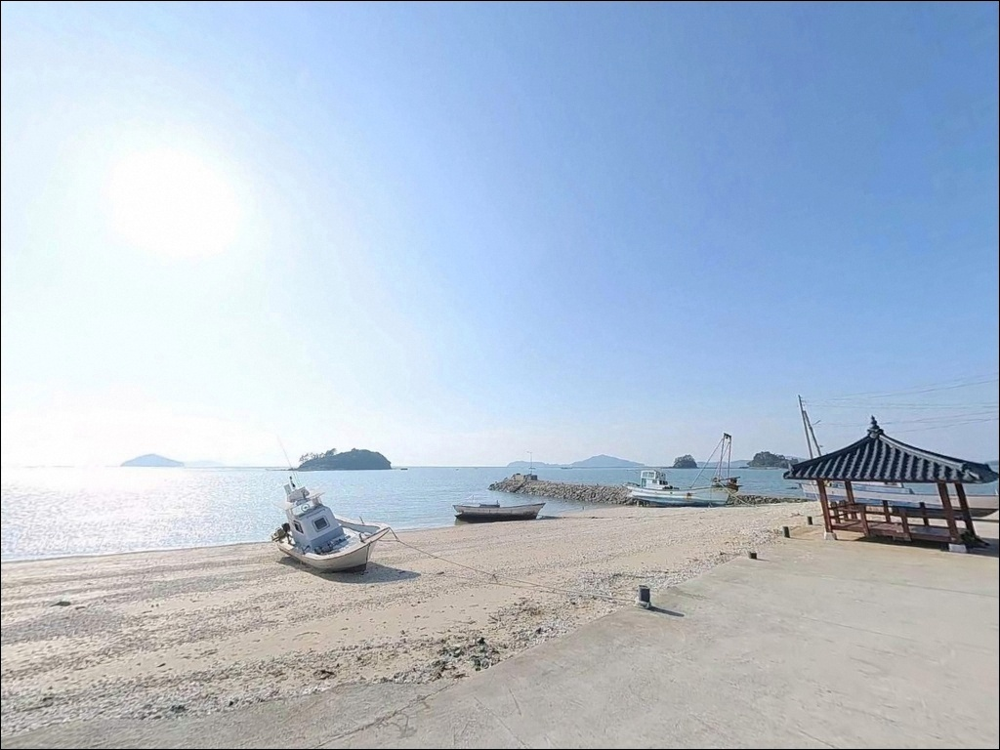
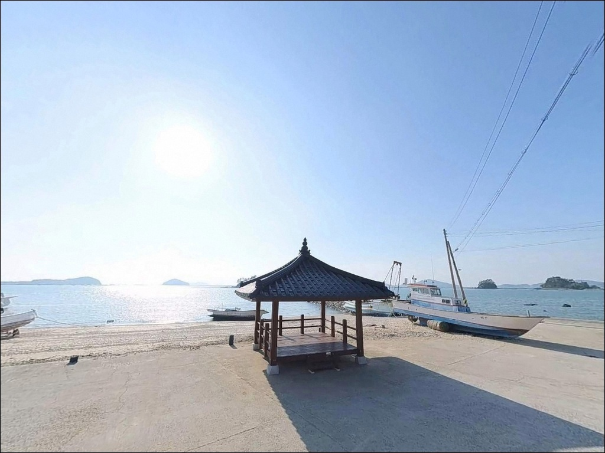
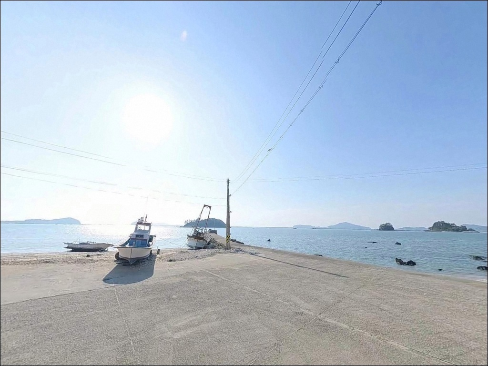
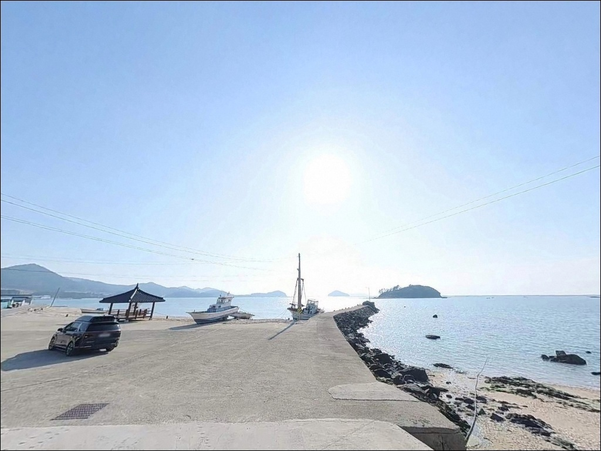
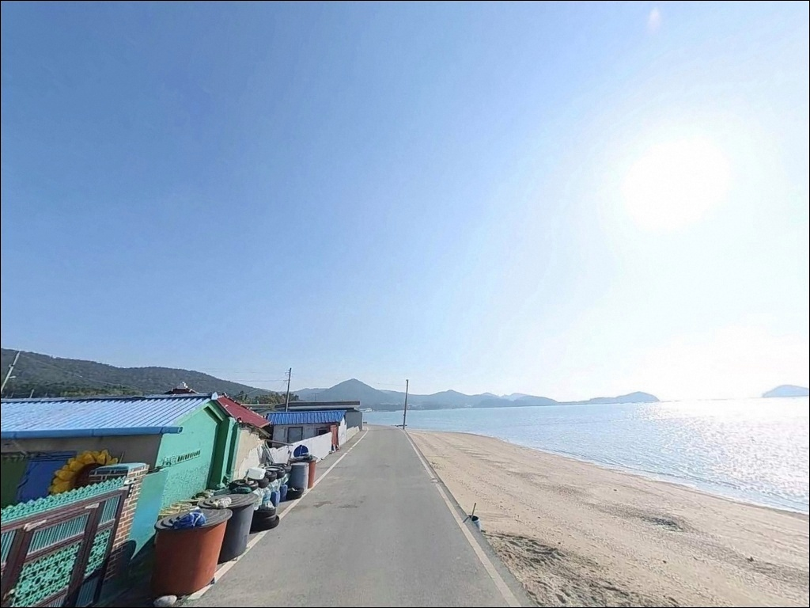

송지갯벌체험 선착장, 전남 해남에서 고요하고 매력적인 차박, 낚시 감성 스팟
이 페이지에는 광고(제휴 링크 포함)가 있으며, 광고 링크를 통해 구매하면 운영자가 판매 수익 또는 수수료를 받을 수 있습니다. 포인트 사진: 카카오맵 스카이뷰·로드뷰. 이 페이지의 지도·사진 이미지는 카카오맵의 실제 서비스 이미지와 다를 수 있습니다.


포인트 안내
송지갯벌체험 선착장
전남 해남군 송지면 송호리 199-7
갯벌 선착장에서 가장 흔히 저지르는 실수는
물때를 확인하지 않고 진입하는 것입니다.
간조 전후에는 갯벌이 넓게 드러나
어떤 채비를 써도 수심이 확보되지 않고,
만조 전후 타이밍을 놓치면 낚시 자리 자체가 사라지는
구조입니다.
송지면 송호리에 자리한 이 선착장은
땅끝송호해변 북쪽 끝자락에 붙은 소형 어촌 구조로,
온라인에 낚시 자료가 거의 남아 있지 않은
아직 덜 알려진 포인트입니다.
앞바다 만호바다 방향으로 바위섬이 산재하고,
전복·김 양식이 활발한 청정 해역에
접해 있는 위치입니다.
이 글은
송지갯벌체험 선착장의
진입 환경, 물때 판단 기준, 낚시 여건, 차박 가능성에 집중합니다.
조황 단정이나 특정 어종 보장은
이 글의 범위에 포함되지 않습니다.

1. 포인트 위치와 진입 동선
송지갯벌체험 선착장은 땅끝해안로를 따라
송호해수욕장 방향에서 접근하는 구조입니다.
해수욕장 인근 해안도로와 연결되어 있어
포장도로 진입이 가능한 편이며,
별도 비포장 구간 없이 선착장까지
차량 접근이 이루어지는 구조입니다.
다만 마을 해안도로 특성상
도로 폭이 좁은 구간이 포함됩니다.
대형 SUV나 장박 차박 세팅 차량은
출발 전 위성지도로 진입로를 미리 확인하고
회차 가능 여부를 파악해 두는 편이 좋습니다.
주차는 선착장 인접 공터 또는
인근 송호해수욕장 공식 주차장을 활용하는 방식이
현실적인 선택입니다.
선착장 자체 주차 공간은 소형 마을 선착장 수준이므로
어선 이동 동선을 막지 않는 자리가 우선입니다.

2. 차박 환경과 야간 체류 조건
송호해수욕장과 인접한 구조로,
여름 성수기를 제외하면 유동인구가 크게 줄어
야간 차박 체류의 조용함은 기대해 볼 수 있습니다.
관광지 해안선 특성상 가로등이 일부 존재하나
선착장 외곽 방향은 어두울 수 있어
개인 조명 장비는 반드시 준비해야 합니다.
선착장 자체 주차 공간은 협소한 편입니다.
차박을 메인으로 계획한다면
선착장 공터보다 송호해수욕장 주차장을 거점으로 삼고,
선착장은 낚시 포인트로만 활용하는 방식이
더 여유로운 체류가 됩니다.
인근 해역에 전복·김 양식 시설이 산재하는 구조로,
야간에는 양식장 조명이 수면에 반사되는 경우가 있습니다.
만호바다 방향 해풍이 들어오는 구조라
야간 기상 변화에 대비한
방풍 준비는 기본으로 갖춰야 합니다.


3. 주변 편의시설 현황
반경 3km 이내에서 확정 가능한 편의점·마트 정보는
확인되지 않습니다.
송지면 일대는 어촌 마을 구조로,
완전 자급 체제로 진입하는 것이
현실적인 준비입니다.
식수, 얼음, 낚시 소품, 간식 모두
출발 전에 갖추고 출발하는 편이 좋습니다.
반경 10km권에서는 땅끝마을 중심부 방향으로
이동하면 식당과 기본 인프라를 활용할 수 있습니다.
땅끝마을 관광안내소 인근 구간이
이 해안선에서 가장 가까운 상권 밀집 구간으로,
부족한 소품이 있다면
이 동선을 활용하는 편이 효율적입니다.

4. 간조 전에 반드시 확인해야 할 준비사항
이 포인트에서 가장 먼저 확인해야 할 것은
물때입니다.
내만형 갯벌 선착장 구조상
간조 시에는 수심이 크게 낮아지는 편으로,
바다타임에서 송호리 기준 물때를 확인하고
만조 전후 2~3시간을 중심으로
출발 시각을 맞추는 것이 기본 전략입니다.
앞바다에는 전복·김 양식 시설이 산재합니다.
찌를 흘리거나 채비를 멀리 던질 때
양식 시설 방향으로 걸리지 않도록
투척 방향을 먼저 파악하고
자리를 잡는 것이 중요합니다.
갯벌 선착장이라 해조류와 뻘로 인한
발판 미끄럼이 있을 수 있습니다.
안전화 또는 논슬립 계열 신발과
구명조끼는 기본으로 챙겨야 하며,
야간 입장 시 헤드랜턴도 필수입니다.

5. 갯벌 지형 기반 낚시 여건 분석
송지갯벌체험 선착장의 지형 특성은
내만형 갯벌이 앞쪽으로 펼쳐진 구조입니다.
외해 직결형보다는 완만한 만 안쪽에 가까운 형태로,
조류는 약한 편이고 수심은 전반적으로 얕습니다.
간조 시에는 갯벌이 넓게 노출되어
만조를 기준으로 낚시 가능 타이밍이 결정되는
구조입니다.
선착장 끝단 방향은 상대적으로 수심이 확보되는 편이며,
조류 흐름이 살아나는 구간입니다.
앞바다 만호바다 방향으로 바위섬이 산재하고
전복·김 양식이 활발한 해역 특성상,
이 일대 연안에서는 다양한 소형 어종이
기대 범위에 들어옵니다.
본격 낚시 포인트라기보다는
만조 타이밍을 맞춰 조용히 즐기는
생활낚시 성격이 강한 자리입니다.
아직 온라인 자료가 많지 않아 조황 흐름을 파악하기 어려우므로,
출조 전 해남 송호리 일대 낚시 조황을
먼저 검색해 보시기 바랍니다.
갯벌 선착장에서 만조 전후 2~3시간은
수심과 조류가 동시에 살아나는 시간대로,
이 타이밍이 낚시 성패를 가르는 핵심 조건입니다.


6. 이 포인트에 어울리는 낚시 스타일
원투낚시가 이 포인트에서 가장 잘 맞는 스타일입니다.
갯벌 지형 특성상 선착장에서 멀리 던져
바닥을 탐색하는 방식이 유효하며,
만조 전후 수심이 확보된 시간대에
붕장어·도다리·보리멸 계열이
기대 어종 범위에 들어옵니다.
찌낚시도 선착장 끝단 방향에서 시도해 볼 수 있습니다.
만호바다 방향으로 열린 수면을 활용해
숭어·학꽁치 계열을 노리는 방식이 어울립니다.
인근 해안선에서 감성돔 찌낚시가
이루어진 사례가 있는 지역 특성상,
선착장 구조물 주변도 탐색해 볼 만합니다.
라이트 루어도 선착장 주변에서 시도할 수 있습니다.
구조물 틈새를 노리는 워킹 루어 방식으로
볼락·우럭류를 기대해 볼 수 있는 구간입니다.
수심이 얕은 구간에서는 가벼운 지그헤드 채비로
바닥 근처를 천천히 탐색하는 방식이 유리합니다.
선착장 진입 전 물때 확인과 양식 시설 방향 파악이
이 포인트에서 낚시 자리를 제대로 잡는
핵심 준비입니다.

7. 대안 포인트와 플랜B 동선
이 선착장에서 여건이 맞지 않을 때
가장 먼저 이동할 곳은
어란진방파제입니다.
약 8km 거리로, 송지면 내에서 비교적 규모가 있는
방파제 포인트이며,
수심 2.5~5m 구간에서 찌낚시·원투낚시
모두 시도할 수 있는 구조입니다.
인근 해역에서 감성돔·도다리·보리멸 계열을
기대해 볼 수 있는 어란진방파제는
동방파제와 중방파제 두 구간으로 나뉘어
자리 선택 폭이 넓습니다.
인근 갯바위 포인트도 연결해서 탐색할 수 있어
이 해안선의 대표적인 검증 포인트입니다.
땅끝항(갈두항)도 플랜B 동선으로 활용할 수 있습니다.
약 5km 거리로 연안항 수준의 방파제와
물양장이 갖춰진 구조이며,
인프라가 상대적으로 충실한 편입니다.
다만 한반도 최남단 관광지 특성상
주간 유동인구가 많아
낚시 공간 여유는 이른 시간대가 유리합니다.

갯벌 타이밍을 이해하면
송호해안이 달라 보입니다
송지갯벌체험 선착장은
조황 자료를 찾아가는 포인트가 아닙니다.
직접 발품을 팔아 만조 타이밍에 맞춰 진입하고,
아직 덜 알려진 청정 해역 연안을
차분하게 탐색해 보는 방식이 맞는 자리입니다.
원투낚시와 찌낚시를 조용히 즐기는 낚시인이라면
이 포인트의 구조 조건이 잘 맞을 수 있습니다.
반면 본격적인 조과를 기대하고 간다면
어란진방파제나 땅끝항을 먼저 공략하고
송지갯벌체험 선착장은
답사 포인트로 함께 묶는 방식이 현실적입니다.
물때 확인, 양식 시설 방향 파악, 진입로 사전 점검,
이 세 가지를 갖추고 방문한다면
땅끝해안 조용한 연안낚시와
차박을 함께 엮는 하룻밤이 될 수 있는 곳입니다.